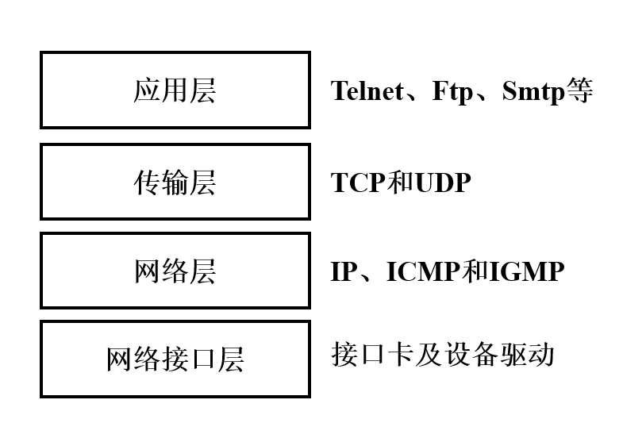
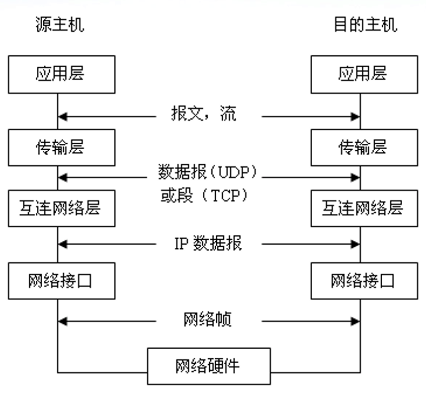
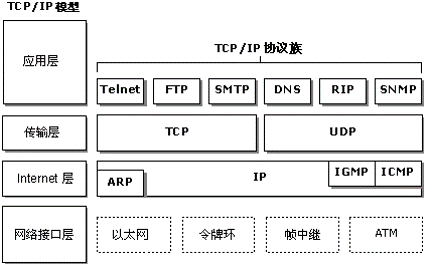

2. 计算机网络概要¶
2.1. 计算机网络的概念¶
一般认为，计算机网络是一个将分散的，具有独立功能的计算机系统，通过通信设备与线路连接起来，由功能完整的软件实现资源共享和信息传递的系统。
2.2. 计算机网络的组成¶
从组成部分上看，一个完整的计算机网络主要由硬件、软件、协议三大组成部分，缺一不可。
从工作方式上看，计算机网络（主要指Internet）可分为边缘部分和核心部分。
从功能组成上看，计算机网络由通信子网和资源子网组成。
2.3. 计算机网络的功能¶
数据通信
资源共享
分布式处理
提高可靠性
负载均衡
2.4. 计算机网络的分类¶
2.4.1. 按分布范围分类¶
广域网（WAN）
城域网（MAN）
局域网（LAN）
个人局域网（PAN）
2.4.2. 按传输技术分类¶
广播式网络
点对点式网络
2.4.3. 按拓扑结构分¶
星形网络
总线形网络
环形网络
网状形网络
2.4.4. 按使用者分¶
公用网
专用网
2.4.5. 按交换技术分类¶
电路交换网络
报文交换网络
分组交换网络
2.5. TCP/IP简介¶
TCP/IP协议源于1969年，是针对Internet开发的一种体系结构和协议标准，其目的在于解决异种计算机网络的通信问题。
TCP/IP的全称是Transmission Control Protocol/Internet Protocol，中译名为传输控制协议/因特网互联协议，又名网络通讯协议，是Internet（注意和Intranet相区分，Intranet是局域网，而Internet目前泛指国际互联网）最基本的协议。
TCP/IP定义了电子设备如何连入因特网，以及数据如何在它们之间传输的标准。协议采用了4层的层级结构，每一层都呼叫它的下一层所提供的协议来完成自己的需求。
这样的设计使得网络在互联时能为用户提供一种通用、一致的通信服务，现在同时也是国际互联网Internet采用的协议标准。
TCP/IP是一组通信协议的代名词，是由一系列协议组成的协议簇，它本身指两个协议集：
TCP 传输控制协议
IP 互联网络协议
其组成如下如所示：

当数据在网路中传输的时候，会依次进过每一层，最终呈现给用户。

2.6. TCP/IP模型¶
由于TCP/IP模型已经成为了事实上的互联网标准，所以我们将不再赘述ISO/OSI七层参考模型（因为基本用不到，除了考试）。

从上至下依次是应用层、传输层、网络层、网络接口层，其中网络接口层也可以继续分为数据链路层和物理层（我们在计算机和网络安全的相关工作学习中，基本上只会用到数据链路层以上的区域，所以这里我们将不对物理层做过多的介绍。
2.7. 数据链路层¶
在数据链路层上，我们把数据单元称为帧，所以在这一层，我们主要关注的有这么几个内容：
封装成帧
透明传输
差错控制
其中主要关系到网络空间安全的是差错控制，，其中差错控制也可以分为两类：
检错编码
纠错编码
通俗来讲，检错编码只要求接收方在接受的时候，能验证数据的正确性，如果在传输过程中发生错误，接收方将无法进行正确数据的还原，只能设法通知发送方重新发送，或者直接丢弃错误数据。
比较著名的检错编码有奇偶检验码、循环冗余码。
奇偶检验码好理解，在整个数据里面，校验位只有一位，当使用的是奇检验的时候，整个数据包括校验位里面1的个数一定为奇数个。而如果使用的是偶检验，整个数据包括检验位里面1的个数一定为偶数个。
循环冗余码则比奇偶检验码稍微复杂那么一点，假设我们要发送一个m bit的帧，发送器会自动生成r bit的帧检验序列（FCS），之后将这两个数据一前一后组合在一起发送出去。接收方接受到数据之后，使用和发送方提前协商好的一个多项式G(x)，让数据除以这个多项式G(x)，如果能整除，数据是正确的，具体计算FCS的过程可以参考计算机网络相关书籍。
而纠错编码则需要接受方接受到数据之后，能通过数据中的信息自动完成错误数据的检测和纠错。
2.8. 网络层¶
网络层主要负责在主机之间寻址和选择数据包的路由，IP协议不含错误恢复的编码，属于不可靠的协议。
在这里中，我们要知道的有这么三个协议：
ARP协议
DHCP协议
ICMP协议
2.8.1. ARP协议¶
IP地址是网络层使用的地址，硬件地址是数据链路层使用的地址，在实际网络的链路上传输，最终必须要使用硬件地址，所以这里就需要一个IP地址和硬件MAC地址的映射关系，这就是地址解析协议（Address Resolution Protocol），在每个主机里面都有一个ARP高速缓存，存放局域网上各主机和路由器的IP地址到MAC地址的映射表，称ARP表，这个表就是使用ARP协议来维护的。
当主机A欲向本局域网里面的主机B发送IP数据报时，就现在其ARP高速缓存中查看有无主机B的IP地址，如有，就可以查出主机B的MAC地址，在将其MAC地址写入MAC帧，最后通过局域网将此MAC帧发送出去。
当ARP高速缓存里面没有主机B的MAC地址，就通过使用目的MAC地址为FF-FF-FF-FF-FF-FF的帧来封装并广播ARP请求分组，在局域网内的各台主机都能收到此ARP请求。当主机B收到这个广播的时候，就会向主机A发送ARP响应分组，分组中包含了主机B的IP和MAC地址映射表，主机A在收到此映射表之后将此映射表写入ARP缓存，然后按查询到的MAC地址发送MAC帧。
2.8.2. DHCP协议¶
动态主机配置协议（Dynamic Host Configuration Protocol）常用于给主机动态地分配IP地址，它提供了即插即用联网机制。DHCP是应用层协议，基于UDP。
DHCP协议使用客户/服务器方式工作，需要IP地址的主机在启动时就向DHCP服务器广播发送报文，这时主机就成为了DHCP客户，本地网络上所有主机都能收到此报文，但是只有DHCP服务器才会回答此广播报文，DHCP服务器首先在自己数据库里面找该主机的配置信息，如找到，则返回找到的信息，如找不到，就从服务器的IP地址池中去一个地址分配给该主机。
2.8.3. ICMP协议¶
为了提高IP数据报交付成功的机会，在网络层中使用了网际控制报文协议（Internet Control Message Protocol），来允许主机或路由器报告差错和异常情况。ICMP是网络层的协议。
ICMP常见的两个应用是分组网间探测PING，用来测试两个主机之间的连通性，还有traceroute，用来追踪分组经过的路由器。其中PING使用了ICMP的回送请求和回答报文，traceroute使用了ICMP的时间超过报文。
2.9. 传输层¶
从通信和信息处理的角度来说，传输层向它上面的应用层提供通信服务，它属于面向通信部分的最高层，同时也是用户功能中的最低层。
传输层位于网络层之上，它为运行在不同主机上的进程之间提供逻辑通信，网络层则是为主机之间提供逻辑通信。
传输层包括两个协议：
TCP
UDP
TCP协议，是一个可靠的、面向连接的协议。
而UDP协议，它采用无连接的方式，不管发送的数据包是否到达目的主机，数据包是否出错，收到数据包的主机也不会告诉发送方是否正确收到了数据，它的可靠性是由上层协议来保障的。
2.9.1. 端口¶
应用进程之间通过端口号进行标示，实际上是一个16 bit长的地址，范围可以从0至65535。
将0至1023端口号称为熟知端口（Well-Known Port），其余1024至65535端口号称为一般端口或动态连接端口（Registered/Dynamic）。
在数据传输过程中，应用层中的各种不同的服务器进程不断地检测分配给它们的端口，以便发现是否有某个应用进程要与它通信。
2.9.2. 套接字¶
在网络中通过IP地址来标识和区别不同主机，通过端口号来标识和区别一台主机上的不同应用进程。在网络中采用发送方和接收方的套接字（Socket）组合来识别端点。
所谓的套接字其实是一个通信端点，即：
套接字 = （主机IP， 端口号）
它唯一的标识了网络中一个主机和其上的一个应用进程。
好，到这里各位读者应该对计算机网络有了一个大致的印象，《计算机网络》本身作为大学计算机专业的一门专业课，其知识结构和层次都比较深刻，所以在这里只对一些必要的概念和知识做了阐述，有其他疑问或者需要补充的地方，可以在Github联系我们。